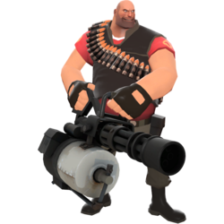

Разведчик - идеальный выбор для быстрого выполнения поставленных задач. Он захватывает контрольные точки и толкает вагонетку в два раза быстрее любого другого класса. Только он обладает этой способностью по умоляанию, однако подрывник и солдат могут увеличить скорость захвата контрольных точек, только используя Костыль. Скорость разведчика делает его бесценным при переносе разведданных, а двойной прыжок позволяет ему нести разведданные нестандартными путями.

Солдат, также известный под псевдонимом мистер Джейн Доу — неуравновешенный патриот из самого сердца Америки и неотъемлемая часть любой команды. И хотя этот класс достаточно прост в понимании его техники игры, это не делает его одним из слабых. Оснащенный своим ракетомётом и 200 очками здоровья, солдат подходит как для защиты, так и для нападения, так что любой может начать играть этим классом, чтобы овладеть всеми необходимыми навыками игры.
Поджигатель — бормочущий пироман неизвестного происхождения, питает жгучую любовь к огню и всему, что с ним связано. Как показано в ролике «Знакомьтесь, Поджигатель», он думает, что живёт в утопичном мире фантазий, известным как Пироландия.
Используя самодельный огнемет, поджигатель может поджигать противников на близкой дистанции, сводя на нет их здоровье с помощью последующего урона от догорания. Из-за небольшой дальнобойности огнемёта поджигатель слаб и уязвим на дальних дистанциях и больше полагается на засады и внезапность, стараясь застать врагов врасплох.
Вечно пьяный шотландский специалист по взрывчатке, подрывник является одним из важнейших членов команды. Несмотря на то, что его оружие неэффективно на дальних дистанциях, подрывник достаточно опасен и может выйти победителем практически из любой ситуации. Он является истинным мастером по работе со взрывчаткой, превосходно расправляющимся с врагами на средней и ближней дистанциях. Вооруженный гранатометом и липучкометом, подрывник использует свои навыки и единственный глаз, чтобы отправлять противников прямиком на небеса, чаще по частям. Если же враг сумеет подобраться вплотную, он с удивлением обнаружит, что подрывник очень неплох и в ближнем бою — ведь ему доступен широкий выбор соответствующего оружия.

Человек-гора из СССР, пулемётчик является самым мощным и опасным классом в Team Fortress 2. Обладая самым большим запасом здоровья и самой внушительной пушкой, он безусловно заставляет считаться с собой. Его огневая мощь очень велика, он способен остановить лавину врагов, поливая их свинцовым дождём из своего пулемёта. Однако при раскрученной пушке пулемётчик становится медленным, как улитка, превращаясь в одну большую мишень для любого врага — будь то снайпер, засевший достаточно далеко, или шпион, коварно подкравшийся со спины. Будучи отличным напарником для медика, пополняя патроны и здоровье от раздатчика инженера, да просто поддерживая огнем любого товарища — пулемётчик, лишний раз подтверждая название игры, в полной мере проявляет свои лучшие качества именно в команде. Помогите ему тоже, и он обязательно поделится с вами своим Бутербродом — самой вкусной аптечкой в игре.

Родом из затерянной страны Новой Зеландии и выросший в Австралийской глуши, снайпер - жестокий и расчётливый стрелок. На поле боя главная роль снайпера - выводить из игры стратегически важные цели противника, используя свою снайперскую винтовку и целясь точно в голову, мгновенно убивая при этом любого противника. Крайне эффективен в дальнем бою и довольно слаб в ближнем, что вынуждает его использовать Кукри или Пистолет-пулемёт. Именно поэтому снайперу удобно залечь в труднодоступном месте на какой-нибудь возвышенности, откуда он сможет с лёгкостью отправлять врагов на тот свет.
Снайпер не любит появляться на передовой, но используя Охотник, он может позволить себе приблизиться к врагу, дабы нашпиговать его стрелами, в то время как таинственная сила Банкате или Сиднейской сони увеличит весь урон получаемый противниками.

Медик — сумрачный Тевтонский гений из Штутгарта, Германия. Хотя он, возможно, и слабо придерживается медицинской этики, тем не менее, он является основным классом лечения в команде. Хотя шприцемёт и медицинская пила медика не являются лучшим оружием для прямого боя, его, как правило, всё же можно найти недалеко от линии фронта. Он исцеляет раненых союзников, пытаясь держаться подальше от вражеского огня.
Когда медик направляет свою лечебную пушку на товарища по команде, он постепенно восстанавливает здоровье. Если у игрока полное здоровье, то он перелечивается, превышая стандартный предел, достигая 150% от его базового запаса здоровья (за исключением оружия, которое имеет штрафы за сверхлечение, такого как Стальные кулаки и Быстроправ). Союзники, которые не получали урон в последнее время, исцеляются быстрее, что побуждает других игроков отступать при травмах.

Инженер (настоящее имя Делл Конагер) — спокойный и добродушный парень техасец из Би-Кейва, штат Техас (английский), США, помешанный на технике. Его специализация — не бой в авангарде, а поддержка своей команды при помощи построек. Турель, автоматизированная пушка, сама прицелится и расстреляет врага, неосмотрительно сунувшегося в зону ее действия. Раздатчик восстановит здоровье, металл и запас патронов товарищам по команде. Телепорт мгновенно перенесет друзей из одного места карты в другое, давая возможность вступить в бой буквально через секунды после появления.

Являясь по происхождению французом, шпион предпочитает носить строгие костюмы и использовать острые ножи. Используя часы невидимости, он способен становиться невидимым или имитировать собственную смерть, что позволяет с низким шансом обнаружения проникнуть в ряды врага. Его маскировочный набор позволяет принять облик любого класса. Имея достаточный навык в искусстве обмана, шпион может одурачить врагов своей маскировкой, вселяя в них ложное чувство безопасности. Когда придет время, он может появиться из ниоткуда, чтобы нанести смертельный удар, вонзив нож в спину своему ничего не подозревающему «союзнику». Быстрый удар в спину любым из ножей шпиона убьет большинство врагов с одно